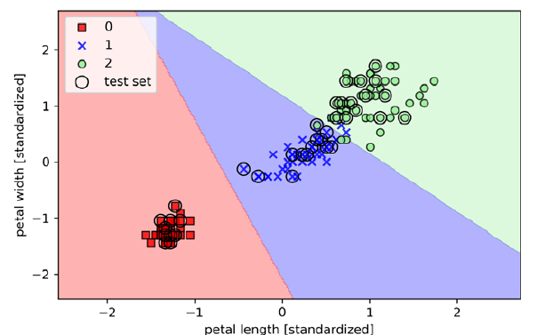
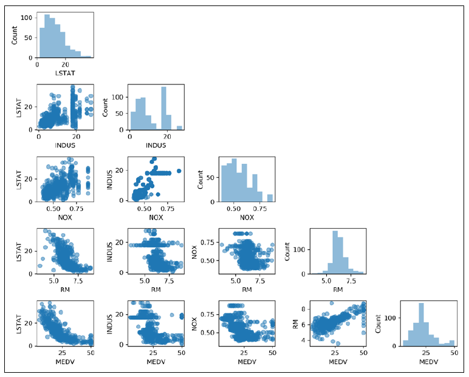

As a python programmer with a scientific background I found this to be a really useful primer on all aspects of machine learning and a great overview of the main python libraries for machine learning.
The lack of Pytorch coverage is the most glaring omission - will there be a 4th edition ?
I learn much more when I follow the examples given - I felt that penny-drop moment regularly as I went through the examples, seeing the matplotlib plots open up and then rerunning them to get slightly different results. The combination of low-level implementations in Python followed by higher-level framework use was particularly powerful.

The dimensionality reduction cases were particularly striking to me - I have frequently had to deal with large data sets in the wind engineering world whether it be multiple decades of wind speed and direction data or billions of data points from wind tunnel testing. When analysing such data looking for extreme values with life safety implications you become very interested in efficient ways to compress the data whilst making it easier to work with but without compromising on accuracy in the extreme values. Classifiers trained on average or normal circumstances are not very useful when trying to ensure a 150m building will resist the storm of the century.
The whole field of machine learning is moving on so quickly that I don't know whether I will come back to this reference for the framework examples but some of the techniques never get old and there are useful techniques throughout.
One limitation is the shortage of good graphics through the book so I think it would be well paired with a good text on data visualisation. I never get tired of poring over graphics like the scatterplot matrix, looking for insights and patterns which the raw statistics don't show you.

bookmarks ai python